Как рождается персонаж
Лицо и костюм ищем в Midjourney: подробный промт и два стоп-кадра Fortiche в style reference. Выбранный вариант переносим в Seedream и доводим до канона: портрет, полный рост, разворот, лист эмоций, пропсы. Этот набор потом лежит в каждом промте, где появляется герой, поэтому он не «плывёт» между кадрами.
Промт Midjourney: портрет Гюнтера
Arcane animated series style, Fortiche Production painterly 2D illustration, visible brush strokes, hand-painted textures, dramatic cinematic lighting. Chest-level portrait of a tall lean charming warlock in his early thirties looking directly into the camera with a warm sly half-smile. Narrow oval face, prominent cheekbones, clean-shaven jaw, warm hazel-green eyes with an intelligent amused sparkle. Voluminous curly chestnut-copper hair of medium length. A prominent copper handlebar mustache with tips waxed and curled upward, the ONLY facial hair. Bronze scissor pince-nez perched on the nose bridge… a deep wine-red soft scarf… Dark teal painterly background, warm copper rim light on the curls. --ar 3:4 --stylize 250 --sw 200 --no beard, goatee, stubble, hood, cloak, ordinary eyeglasses with ear temples
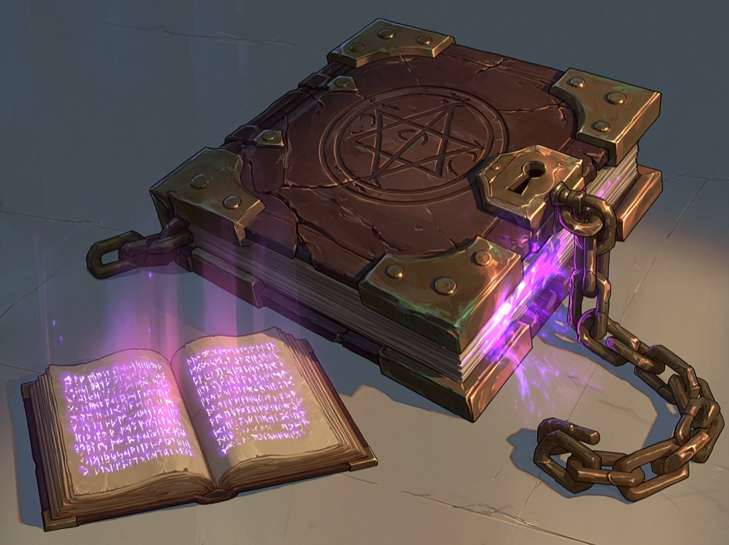
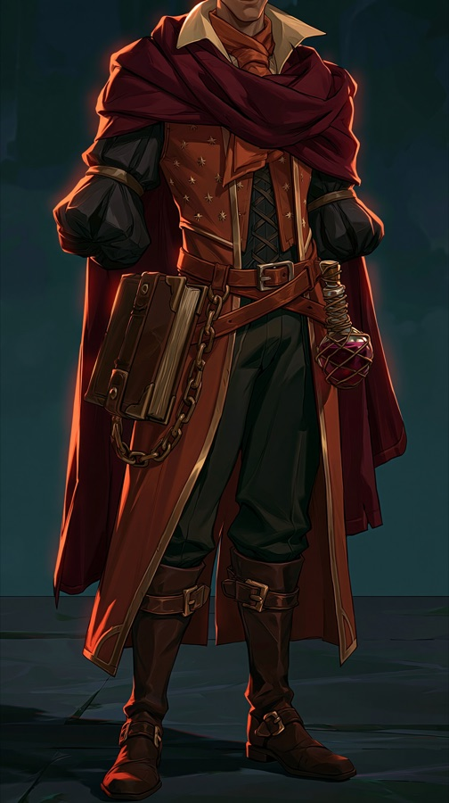
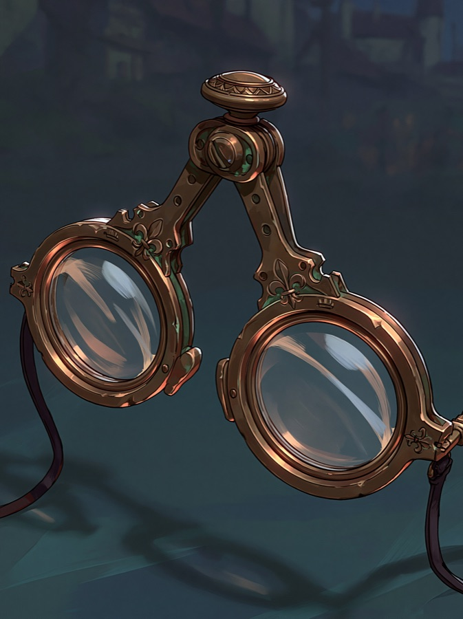

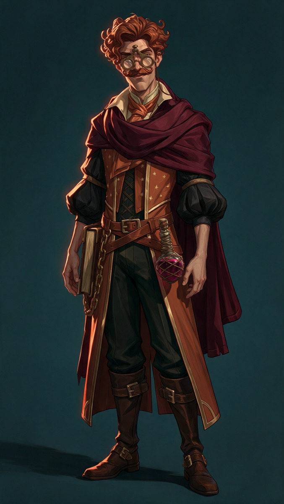


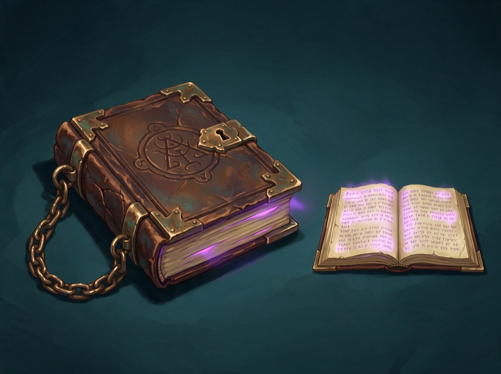
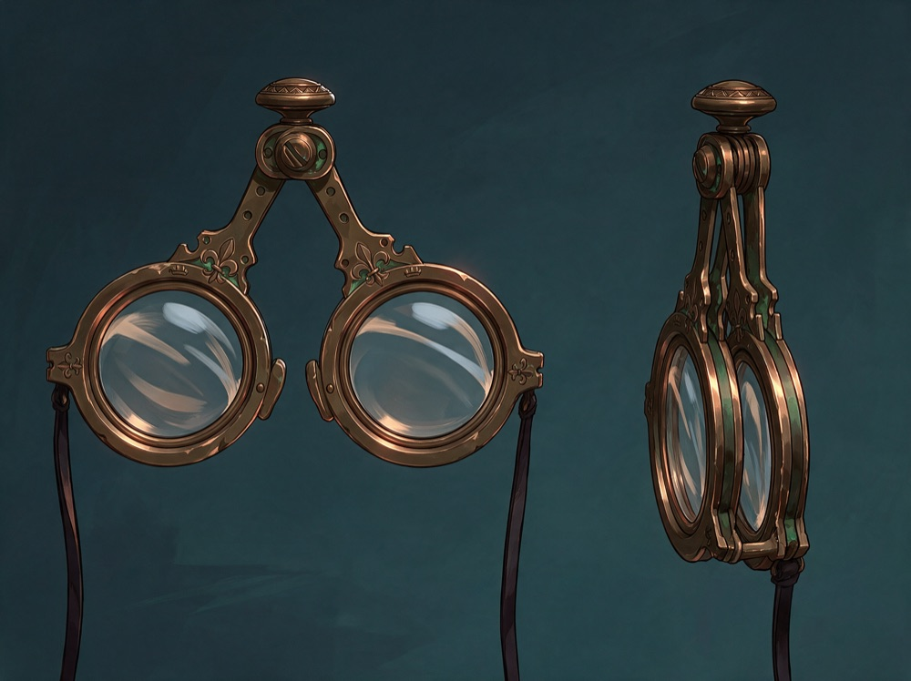
Гюнтер, колдун. Рыжие кудри и усы, пенсне-ножницы на шнурке, винный шарф. Его магия всегда выглядит как красная ветвящаяся молния.
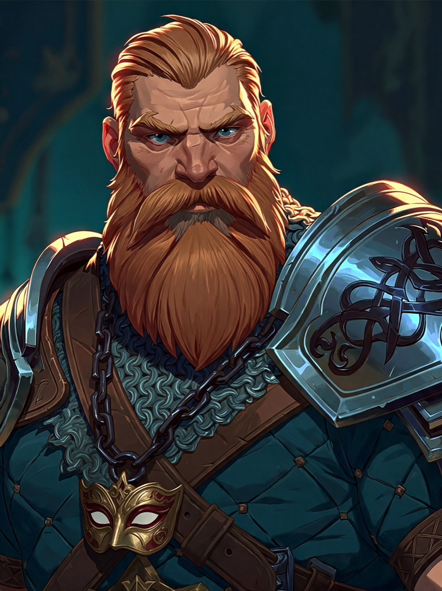
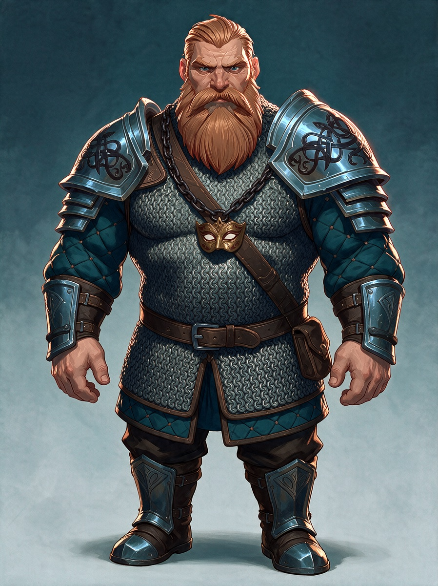
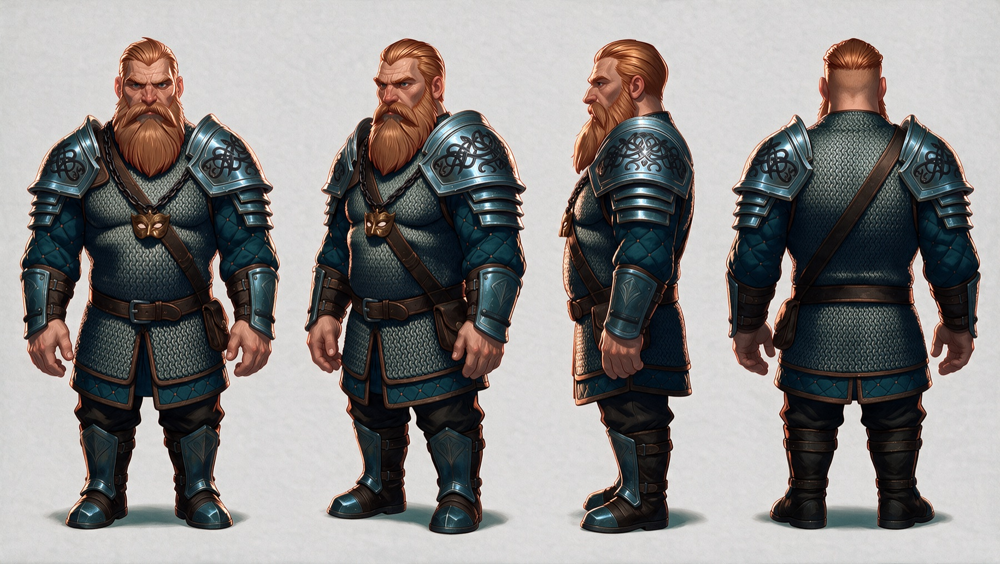
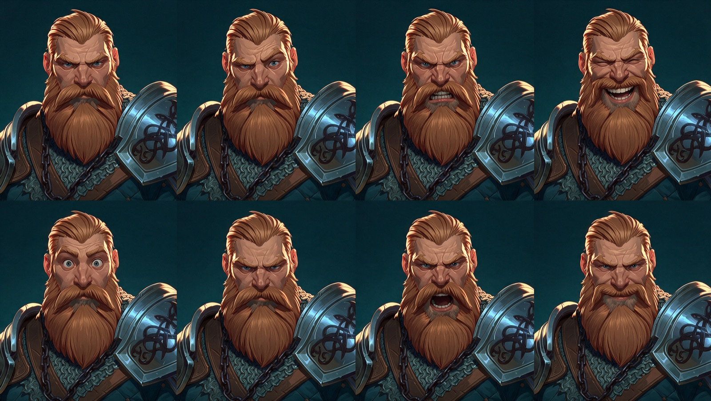
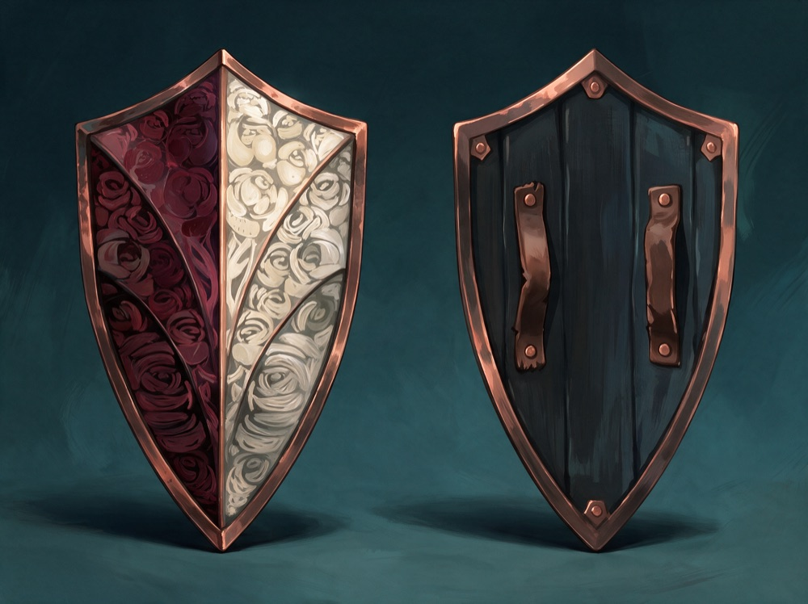
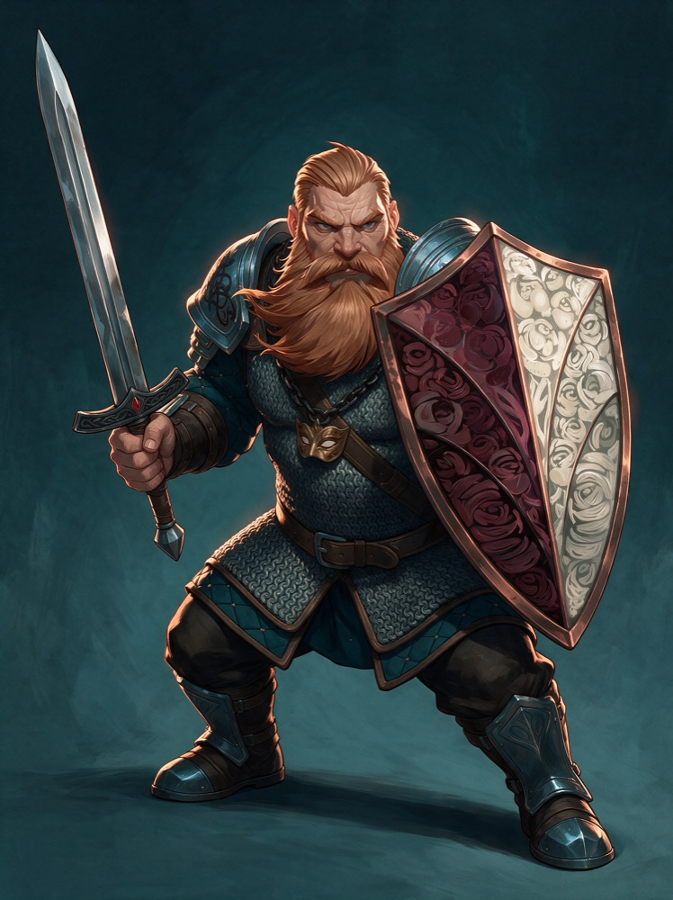
Торадин, дварф. 161 см, рыжая борода, сине-стальная кольчуга, меч и щит с резными розами. На голову ниже спутников и вдвое шире.
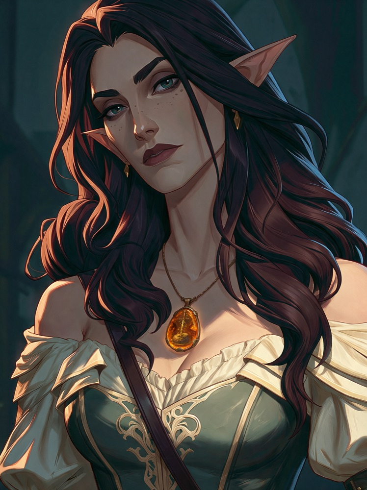
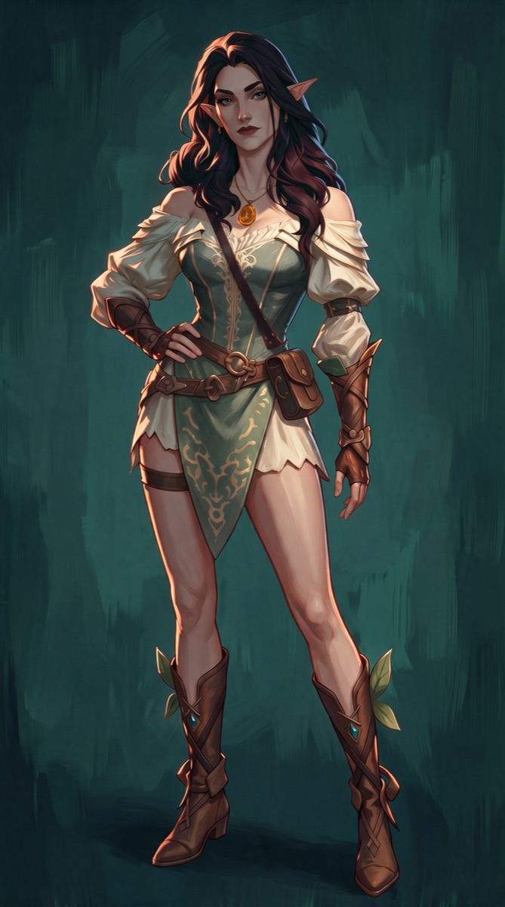
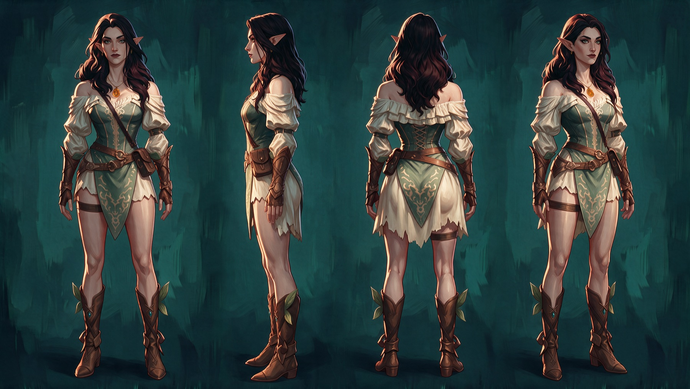
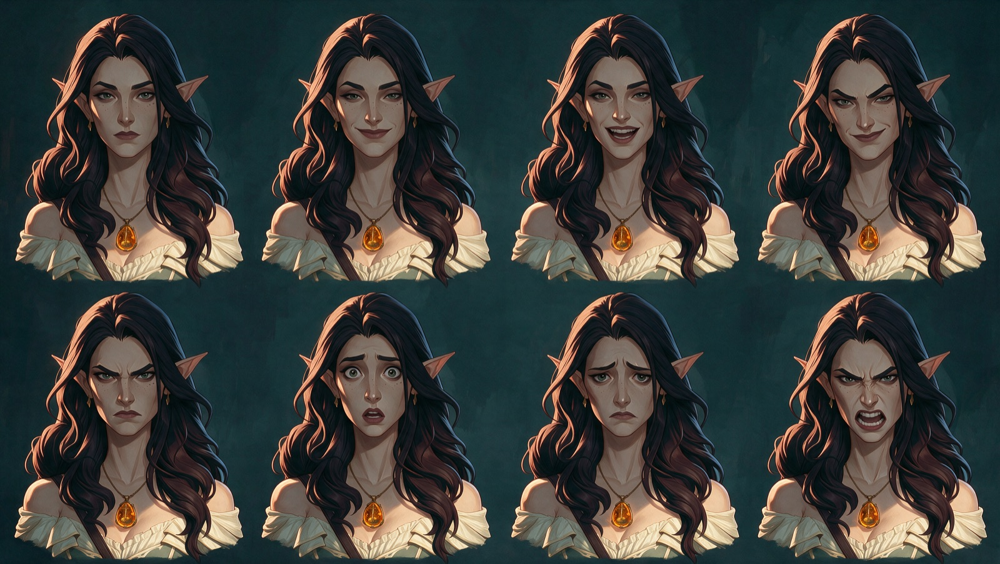
Сианара, героиня. Посох и булава-бутон. Булаву держит одной рукой, и тогда посоха в руках нет.
Патрик, бард, пират. Котелок, трилистник на правой скуле, волчий наплечник на левом плече, лютня. На полголовы ниже других пиратов.
Гаспар, плут, пират. Платиновый ёжик под красной банданой, чёрная борода, септум, кожаное пальто с латунными пуговицами.
Эллиана, пират. Эльфийские уши, медные кудри, веснушки, жемчуг и изумруд, лук с колчаном. Её магия по канону выглядит как бирюзовый росчерк.